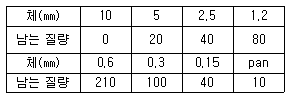
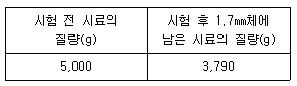
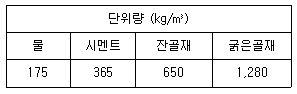
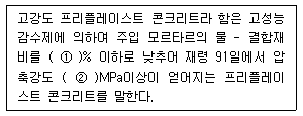
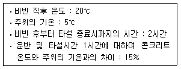
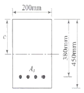
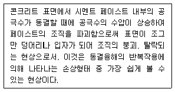

콘크리트산업기사 (2011-03-20 기출문제)
1과목: 콘크리트재료 및 배합
1. 다음에 주어진 잔골재(전체 500g)의 체가름 시험결과표를 이용하여 골재의 조립률을 구하면?

- 2.90
- 3.02
- 3.15
- 3.20
(정답률: 70%)

2. 콘크리트의 배합에서 단면이 큰 철큰 콘크리트의 슬럼프 표준값으로 옳은 것은?
- 80~150mm
- 60~120mm
- 50~100mm
- 100~150mm
(정답률: 71%)
3. 로스앤젤레스 시험기에 의한 굵은골재의 마모시험 결과가 아래 표와 같을 때 마모감량은?

- 18.5%
- 24.2%
- 27.3%
- 31.9%
(정답률: 87%)
4. 콘크리트의 압축강도를 알지 못할 때, 또는 압축강도의 시험횟수가 14회 이하인 경우 콘크리트의 배합강도를 구한 것으로 틀린 것은?
- 설계기준 압축강도 fck=20MPa일 때, 배합강도 fcr=27MPa이다.
- 설계기준 압축강도 fck=25MPa일 때, 배합강도 fcr=33MPa이다.
- 설계기준 압축강도 fck=30MPa일 때, 배합강도 fcr=38.5MPa이다.
- 설계기준 압축강도 fck=40MPa일 때, 배합강도 fcr=50MPa이다.
(정답률: 64%)
5. 배합설계에서 잔골재의 절대용적이 320L, 굵은골재의 절대용적이 560L일 때, 잔골재율 은 얼마인가?
- 36.4%
- 42.5%
- 57.1%
- 63.6%
(정답률: 87%)
6. 특수 시멘트인 팽창 시멘트에 관한 설명으로 옳지 않은 것은?
- 적당량의 팽창재(CaO-Al2O-SO3)를 혼합시킨 시멘트이다.
- 팽창 시멘트를 사용한 콘크리트는 화학적 내구성이 크게 향상된다.
- 콘크리트의 균열 방지를 주목적으로 하는 수축보상 콘크리트로 사용된다.
- 믹싱시간이 길어지면 팽창률이 감소하므로 주의할 필요가 있다.
(정답률: 87%)
7. 흡수율이 2.48%인 젖은 모래 568.3g을 110℃에서 24시간 건조하여 525.6g으로 일정 질량이 되었다. 이 젖은 모래의 표면수율은?
- 4.2%
- 5.5%
- 6.7%
- 8.1%
(정답률: 알수없음)
8. 콘크리트 시방배합 결과가 8) 다음과 같고 5mm체에 남은 잔골재량이 6%, 5mm체를 통과하는 굵은골재량이 4%일 때 입도를 보정하여 잔골재량을 현장배합으로 수정한 값으로 옳은 것은?

- 626.8kg/m3
- 636.4kg/m3
- 643.8kg/m3
- 652.6kg/m3
(정답률: 알수없음)
9. 시멘트 비중시험에 대한 내용으로 잘못된 것은?
- 르샤틀리에 비중병의 눈금 1과 0에 위아래에 0.1mL 눈금이 2줄씩 여분으로 새겨져 있다.
- 일정량의 시멘트(포틀랜드 시멘트는 약 64g)를 1g의 정밀도로 달아 정량한다.
- 동일 시험자가 동일 재료에 대하여 2회 측정한 결과가 ±0.03 이내이어야 한다.
- 광유의 온도가 1℃ 변화하면 용적이 약 0.2cc 변화되어 비중은 약 0.02의 차가 생기므로 시멘트를 넣기 전후의 광유의 온도차는 0.2℃를 넘어서는 안된다.
(정답률: 알수없음)
10. 다음 중 골재에 관련된 일반적인 시험이 아닌 것은?
- 제가름시험
- 밀도 및 흡수율시험
- 압축강도시험
- 안정성시험
(정답률: 85%)
11. 시멘트의 비중이 작아지는 경우에 대한 설명으로 틀린 것은?
- 시멘트 클링커의 소성이 불충분한 경우
- 시멘트에 혼합물이 섞여 있는 경우
- 시멘트가 풍화한 경우
- 시멘트의 저장기간이 짧은 경우
(정답률: 70%)
12. 혼화재로 실리카 퓸을 사용한 콘크리트의 특성에 대한 설명으로 틀린 것은?
- 단위수량 및 건조수축이 감소된다.
- 투수성이 작아 수밀성이 향상되며, 재료분리 저항성이 향상된다.
- 수화열이 작고, 화학저항성이 향상된다.
- 마이크로 필러 효과로 압축강도 발현성이 크다.
(정답률: 84%)
13. 시멘트의 원료, 제조 및 조성광물에 대한 설명으로 틀린 것은?
- 시멘트의 성분 중 산화마그네슘은 수화에서 체적 증가를 동반하므로 6% 이상 포함되어야 한다.
- 시멘트는 석회석, 점토, 혈암 등의 원료를 혼합하여 약 1,450℃까지 가열하여 얻어진다.
- 클링커에서 가장 많은 성분은 C3S를 주성분으로 하는 알라이트이다.
- 포틀랜드 시멘트의 주요 화학성분은 CaO, SiO2, Al2O3, Fe2O3이다.
(정답률: 59%)
14. 잔골재의 밀도 및 흡수율 시험에서 결과의 정밀도에 대한 설명으로 옳은 것은?
- 시험값은 평균과의 차이가 밀도의 경우 0.1g/cm3 이하, 흡수율의 경우는 0.5% 이하이어야 한다.
- 시험값은 평균과의 차이가 밀도의 경우 0.01g/cm3 이하, 흡수율의 경우는 0.⑤% 이하이어야 한다.
- 시험값은 평균과의 차이가 밀도의 경우 0.⑤g/cm3 이하, 흡수율의 경우는 0.01% 이하이어야 한다.
- 시험값은 평균과의 차이가 밀도의 경우 0.5g/cm3 이하, 흡수율의 경우는 0.1% 이하이어야 한다.
(정답률: 64%)
15. 콘크리트의 설계기준강도(fck)가 30MPa이고 압축강도의 표준편차(s)가 4MPa일 때, 배합강도(fcr)는?
- 35.36MPa
- 35.82MPa
- 36.67MPa
- 37.51MPa
(정답률: 알수없음)
16. 콘크리트 배합시 슬럼프에 대한 다음 설명 중 옳지 않은 것은?
- 슬럼프 값이 너무 작으면 타설이 곤란하다.
- 콘크리트의 배합온도가 높아지면 슬럼프 값이 증가하는 경향이 있다.
- 슬럼프 값은 진동기 사용 등 다짐방법에 의해서도 변하게 된다.
- 슬럼프 값은 타설장소에서의 값이 중요하므로 운반거리와 시간을 고려하여야 한다.
(정답률: 77%)
17. 시멘트의 강도시험(KS L ISO 679)에서 규정하고 있는 시멘트 모르타르의 압축강도 시험에 사용되는 공시체에 대한 설명으로 옳은 것은?
- 부피로 시멘트 1에 대해서 물/시멘트비 0.5 및 잔골재 2.7의 비율로 모르타르를 성형한다.
- 부피로 시멘트 1에 대해서 물/시멘트비 0.4 및 잔골재 3의 비율로 모르타르를 성형한다.
- 부피로 시멘트 1에 대해서 물/시멘트비 0.4 및 잔골재 2.7의 비율로 모르타르를 성형한다.
- 부피로 시멘트 1에 대해서 물/시멘트비 0.5 및 잔골재 3의 비율로 모르타르를 성형한다.
(정답률: 77%)
18. 화학혼화제 중 공기연행 감수제를 성능에 따라 분류할 때 그 종류에 속하지 않는 것은?
- 표준형
- 지연형
- 급결형
- 촉진형
(정답률: 42%)
19. 콘크리트용 화학 혼화제(공기연행제, 감수제 등)의 성능을 확인하기 위한 콘크리트시험에서 시료의 혼합방법에 대한 설명으로 틀린 것은?
- 콘크리트 혼합 후의 온도는 20±3℃로 유지한다.
- 기준 콘크리트와 시험 콘크리트의 1배치 혼합량은 동일한 양으로 한다.
- 화학 혼화제는 혼합수를 넣은 다음 유실되지 않도록 믹서에 조심하여 투입한다.
- 콘크리트는 모든 재료를 믹서에 투입한 후 경제식 혼합믹서에서는 1.5분, 가경식 믹서에서는 3분간 혼합한다.
(정답률: 알수없음)
20. 콘크리트용 혼화재료 플아이 애시를 사용하려고 할 때 주의사항으로 틀린 것은?
- 플라이 애시는 미연소 탄소분이 포함되어 있어서 소요공기량을 얻기 위한 공기연행제의 사용량이 증가된다.
- 플라이 애시를 사용한 콘크리트는 운반 중에 공기연행제의 흡착에 의하여 공기량이 크게 증가되는 문제점이 있다.
- 플라이 애시는 품질 변동이 크게 되기 쉬우므로 사용시 품질을 확인할 필요가 있다.
- 플라이 애시는 보존 중에 입자가 응집하여 고결하는 경우가 생기므로 저장에 유의해야 한다.
(정답률: 71%)
2과목: 콘크리트제조, 시험 및 품질관리
21. 콘크리트의 균열에 대한 설명으로 틀린 것은?
- 이형철근을 사용하면 균열폭을 줄일 수 있다.
- 인장측에 철근을 잘 배분하면 균열폭을 최소화할 수 있다.
- 철근의 부식 정도는 균열폭이 문제가 아니라 균열의 수가 문제이다.
- 콘크리트 표면의 균열폭은 콘크리트 피복두께에 비례한다.
(정답률: 67%)
22. 콘크리트 응결 특성에 관계되는 요소로서 거리가 먼 것은?
- 굵은골재의 최대치수
- 시멘트의 품질
- 혼화재료의 품질
- 타설시의 온도
(정답률: 77%)
23. 직경이 200mm, 길이 5m인 강봉에 축방향으로 500kN의 인장력을 주어 지름이 0.1mm가 줄고 길이가 10mm 늘어난 경우의 이 재료의 푸아송수는 얼마인가?
- 0.25
- 2
- 4
- 8
(정답률: 55%)
24. 품질관리의 순서로 적당한 것은?
- 계획 - 조치 - 검토 - 실시
- 계획 - 검토 - 조치 - 실시
- 계획 - 실시 - 검토 - 조치
- 계획 - 검토 - 실시 - 조치
(정답률: 85%)
25. 다음 중 된비빔 콘크리트용 시험이 아닌 것은?
- 비비시험
- 다짐계수시험
- L플로시험
- 진동대식 컨시스턴시 시험
(정답률: 알수없음)
26. 콘크리트의 표면상태의 검사 항목이 아닌 것은?
- 노출면의 상태
- 철근피복두께
- 균열
- 시공이음
(정답률: 60%)
27. 콘크리트의 품질관리에 사용하는 관리도에 관한 설명으로 틀린 것은?
- 관리도로 콘크리트의 제조공정의 안정 여부를 판정할 수 있다.
- 관리도를 사용하면 우연한 변동과 이상 원인에 의한 변동을 구분할 수 있다.
- 압축강도와 같은 데이터는 계수값 관리도에 의해 관리하는 것이 효과적이다.
- 관리도는 관리특성의 중심적 특성을 나타내는 중심선과 이것의 상하에 허용되는 범위의 폭을 나타내는 관리한계로 구성된다.
(정답률: 67%)
28. 굳지 않은 콘크리트 중의 전 염소이온량은 원칙적으로 얼마 이하로 규정하고 있는가?
- 0.3kg/m3
- 0.5kg/m3
- 0.7kg/m3
- 0.9kg/m3
(정답률: 63%)
29. 콘크리트의 정탄성계수는 콘크리트의 어떤 특성에서 얻어지는가?
- 푸아송비
- 크리프
- S-N곡선(반복하중 횟수-응력 곡선)
- 응력-변형률 곡선
(정답률: 72%)
30. 관입저항침에 의한 콘크리트의 응결시간 측정시 초결시간으로 정의하는 관입저항값은 얼마인가?
- 2.5MPa
- 2.8MPa
- 3.0MPa
- 3.5MPa
(정답률: 84%)
31. 레디믹스트 콘크리트 공장에서 회수수를 배합수로서 사용할 경우에 대한 설명으로 틀린 것은?
- 슬러지수를 사용하였을 경우 슬러지 고형분율이 3%를 초과하면 안된다.
- 회수수의 염소 이온량은 250mg/L 이하로 관리한다.
- 회수수를 사용한 경우 모르타르 압축강도비는 재령 7일 및 28일에서 100% 이상이어야 한다.
- 레디믹스트 콘크리트를 배합할 때 슬러지수 중에 포함된 슬러지 고형분은 물의 질량에는 포함되지 않는다.
(정답률: 80%)
32. 공시체의 형상 및 시험방법이 압축강도에 미치는 영향에 대한 설명으로 틀린 것은?
- 원주형 공시체의 높이와 지름의 비인 H/D의 값이 커질수록 강도가 작게 된다.
- 재하속도가 빠를수록 강도가 크게 나타난다.
- 캐핑의 두께는 가능한 얇은 것이 좋으며, 6mm를 넘으면 강도의 저하가 커진다.
- 시험 직전에 공시체를 건조시키면 일시적으로 강도가 감소한다.
(정답률: 91%)
33. 콘크리트의 크리프(creep)에 영향을 주는 요소에 대한 설명으로 틀린 것은?
- 재하응력이 클수록 크리프가 크다.
- 재하시의 재령이 작을수록 크리프가 크다.
- 조강 시멘트를 사용한 콘크리트는 보통 시멘트를 사용한 콘크리트보다 크리프가 크다.
- 부재의 치수가 작을수록 크리프가 크다.
(정답률: 알수없음)
34. 압축강도에 의한 콘크리트의 품질검사에 관한 다음 설명 중 옳지 않은 것은?
- 일반적인 경우 조기재령에 있어서의 압축강도에 의해 실시한다.
- 시험회수는 콘크리트 200~300m3마다 1회로 정하고 있다.
- 1회의 시험치는 현장에서 채취한 시험체 3개의 연소한 압축강도 시험값의 평균치로 한다.
- 시험체는 구조물에 사용되는 콘크리트를 대표할 수 있도록 채취하여야 한다.
(정답률: 71%)
35. 콘크리트 압축강도 시험에 지름 100mm, 높이 200mm인 원주형 공시체를 사용하였을때 최대압축하중이 437kN이었다면 압축강도는 얼마인가?
- 55.6MPa
- 56.6MPa
- 57.6MPa
- 58.6MPa
(정답률: 알수없음)
36. 슬럼프 시험에서 다짐봉 중 콘크리트에 닿는 부분의 모양으로 옳은 것은?
- 뾰족할 것
- 평탄할 것
- 반구형일 것
- 오목할 것
(정답률: 알수없음)
37. 콘크리트의 균열 중 경화 후에 발생하는 균열의 종류에 속하지 않는 것은?
- 건조수축균열
- 온도균열
- 소성수축균열
- 휨균열
(정답률: 알수없음)
38. 콘크리트 구조물의 비파괴시험법의 작용에 대한 설명으로 틀린 것은?
- 콘크리트의 중성화 깊이를 추정하기 위해서 중성자법을 이용한다.
- 콘크리트의 균열 깊이를 추정하기 위하여 초음파법을 이용한다.
- 콘크리트 중의 철근위치를 파악하기 위해서 전자유도법을 이용한다.
- 콘크리트의 압축강도를 추정하기 위하여 반발경도법을 이용한다.
(정답률: 59%)
39. 콘크리트의 동해 및 내동해성에 관한 설명 중 잘못된 것은?
- 흡수율이 큰 골재를 사용하면 동해를 일으키기 쉽다.
- 공기연행제를 사용하면 내동해성을 향상시키는데 큰 효과가 있다.
- 건습 반복을 받는 부재가 건조상태로 유지되는 부재에 비해 동해를 일으키기 쉽다.
- 물-시멘트비가 큰 콘크리트를 사용하면 동해를 작게 할 수 있다.
(정답률: 알수없음)
40. 보통 골재를 사용한 콘크리트의 단위 용적질량으로서 가장 적당한 것은?
- 1.8t/m3
- 2.3t/m3
- 2.0t/m3
- 3.3t/m3
(정답률: 73%)
3과목: 콘크리트의 시공
41. 해양 콘크리트에 대한 설명 중 적절하지 못한 것은?
- 철큰 피복두께는 일반 콘크리트보다 크게 한다.
- 내구성을 고려하여 정한 최대 물-결합재비는 일반 콘크리트보다 작게 하는 것이 바람직하다.
- 보통 포틀랜드 시멘트를 사용한 콘크리트는 적어도 재령 5일이 될 때까지 해수에 직접 접촉되지 않도록 한다.
- 해수의 작용에 대하여 내구성이 높은 고로 슬래그 시멘트를 사용하면 초기 양생기간을 단축시킬 수 있다.
(정답률: 알수없음)
42. 일반 수중 콘크리트의 시공 상 유의사항으로 틀린 것은?
- 물-결합재비는 50% 이하로 한다.
- 워커빌리티(workability)와 점성이 작아야 한다.
- 단위시멘트량은 370kg/m3 이상으로 한다.
- 타설시 물을 정지시킨 정수 중에서 타설하는 것이 좋다.
(정답률: 70%)
43. 경량골재 콘크리트에 대한 설명으로 틀린 것은?
- 굵은골재의 최대치수는 원칙적으로 20mm로 한다.
- 경량골재는 흡수율의 변동이 크므로 골재를 저장할 때 항상 공기 중 건조상태를 유지하여야 한다.
- 경량골재 콘크리트는 공기연행 콘크리트로 하는 것을 원칙으로 한다.
- 슬럼프는 일반적인 경우 대체로 50~180mm를 표준으로 한다.
(정답률: 43%)
44. 포장 콘크리트의 인력포설 후 다짐에 대한 설명으로 옳은 것은?
- 거푸집 및 이음 부근은 봉다짐 진동기를 사용하여야 한다.
- 다질 수 있는 1층 두께는 200mm 이하로 하여야 한다.
- 혼합물의 다짐은 포설 후 1시간 30분 이내에 완료하여야 한다.
- 진동기는 한 자리에서 30초 이상 다짐하여야 한다.
(정답률: 19%)
45. 매스 콘크리트에서 온도균열지수는 구조물의 중요도, 기능, 호나경조건 등에 대응할 수 있도록 선정되어야 한다. 철근이 배치된 일반적인 구조물에서 유해한 균열발생을 제한 할 경우 온도균열지수값으로 옳은 것은?
- 2.2~2.7
- 1.7~2.2
- 1.2~1.7
- 0.7~1.2
(정답률: 알수없음)
46. 매스 콘크리트의 온도 균열 방지에 관한 다음의 일반적인 설명 중 틀린 것은?
- 콘크리트의 중심부와 표면부와의 온도차를 가능한 한 작게 한다.
- 콘크리트의 온도상승량을 가능한 한 작게 한다.
- 강도 발현이 빠른 시멘트를 사용한다.
- 거푸집은 보온성이 좋은 것을 사용하고 존치기간을 길게 한다.
(정답률: 57%)
47. 댐 콘크리트 중 롤러 다짐 콘크리트 반죽질기의 표준값으로 옳은 것은? (단, VC시험을 실시한 경우)
- 10±5초
- 20±10초
- 30±15초
- 40±20초
(정답률: 77%)
48. 고강도 콘크리트의 시공에 대한 설명으로 옳지 않은 것은?
- 운반차량에는 고성능 감수제 투여장치와 같은 보조장치를 준비하여야 한다.
- 낮은 물-결합재비를 가지므로 기건양생을 실시해야 한다.
- 다짐에 사용되는 다짐기의 기종은 높은 점성 등을 고려하여 선정하여야 한다.
- 콘크리트 타설의 낙하고는 1m 이하로 하는 것이 좋다.
(정답률: 58%)
49. 유동화 콘크리트에서 베이스 콘크리트를 유동화시키는 제조방식에 해당되지 않는 것은?
- 현장첨가 현장유동화 방식
- 공장첨가 현장유동화 방식
- 공장첨가 공장유동화 방식
- 배처플랜트첨가 유동화 방식
(정답률: 67%)
50. 다음 중 촉진 양생의 종류가 아닌 것은?
- 오토클레이브 양생
- 습윤양생
- 전기양생
- 증기양생
(정답률: 75%)
51. 고강도 프리플레이스트 콘크리트의 정의에 대한 아래 표의 ( )에 알맞은 것은?

- ① 40, ② 40
- ① 40, ② 30
- ① 30, ② 40
- ① 30, ② 30
(정답률: 48%)
52. 트레미에 의한 수중 콘크리트의 타설에서 트레미의 안지름으로 적당하지 않은 것은?
- 수심 3m 이내 : 250mm 정도
- 수심 3~5m : 300mm 정도
- 수심 5m 이상 : 300~500mm 정도
- 굵은골재 최대치수의 5배 정도
(정답률: 45%)
53. 영구 지보재 개념으로 숏크리트를 타설하는 경우 설계기준압축강도는 얼마 이상으로 하여야 하는가?
- 18MPa
- 21MPa
- 28MPa
- 35MPa
(정답률: 알수없음)
54. 아래 표와 같은 조건에서 한중 콘크리트의 타설이 종료되었을 때 온도를 구하면?

- 10.5℃
- 12.5℃
- 15.5℃
- 17.75℃
(정답률: 75%)
55. 수밀 콘크리트의 연속타설시간 간격은 외기온이 25℃ 이하일 때 몇 시간 이내로 하여야 하는가?
- 1시간
- 1시간 30분
- 2시간
- 2시간 30분
(정답률: 82%)
56. 공장 제품에 사용하는 콘크리트의 강도는 재령 몇 일에서의 압축강도 시험값으로 나타내는 것을 원칙으로 하는가? (단, 일반적인 공장 제품의 경우)
- 7일
- 14일
- 28일
- 91일
(정답률: 82%)
57. 일반 콘크리트의 시공에서 이음에 대한 설명으로 틀린 것은?
- 시공이음은 될 수 있는 대로 전단력이 적은 위치에 설치하는 것이 원칙이다.
- 일반적으로 연직 시공이음부의 거푸집 제거시기는 콘크리트를 타설하고 난 후 여름에는 4~6시간 정도로 한다.
- 바닥틀의 시공이음은 슬래브 또는 보의 경간 중앙부 부근에 두어야 한다.
- 아치의 시공이음은 아치축에 평행방향이 되도록 설치하는 것이 원칙이다.
(정답률: 56%)
58. 전단력이 큰 위치에 시공이음을 설치할 경우 전단력에 대한 보강방법으로 적절하지 않은 것은?
- 장부(요철)를 만드는 방법
- 홈을 만드는 방법
- 철근으로 보강하는 방법
- 레이턴스를 많이 발생시키는 방법
(정답률: 알수없음)
59. 한중 콘크리트 시공 시 사용 시멘트로서 가장 적합한 것은?
- 플라이 애시 시멘트
- 포틀랜드 시멘트
- 실리카 시멘트
- 고로 시멘트
(정답률: 73%)
60. 결합재로서 시멘트를 전혀 사용하지 않고 열경화성 또는 열가소성 수지 등을 사용하여 골재를 결합시키는 콘크리트는?
- 폴리머 콘크리트
- 중량 콘크리트
- 에코시멘트 콘크리트
- 포러스 콘크리트
(정답률: 75%)
4과목: 콘크리트 구조 및 유지관리
61. 다음에서 보수공법에 해당되는 것은?
- 단면복구공법
- 탄소섬유 보강공법
- 강판점착공법
- 외부 프리스트레스 도입 공법
(정답률: 60%)
62. 강도설계법을 적용하기 위한 가정 조건으로 틀린 것은?
- 극한강도 상태에서 철근 및 콘크리트의 응력은 중립축으로부터의 거리에 비례한다.
- 압축측 연단에서 콘크리트의 극한변형률은 0.003으로 가정한다.
- 콘크리트의 응력분포는 가로 0.85fck, 깊이 a=β1c인 등가 4각형 분포로 나타낼 수 있다.
- 휨응력 계산에서 콘크리트의 인장강도는 무시한다.
(정답률: 알수없음)
63. 반발경도법에 의한 콘크리트 압축강도 추정에서 주로 슈미트 해머를 많이 사용한다. 이 해머 사용 전에 검교정을 위해 사용하는 기구의 명칭은?
- 캘리브레이션 바(calibration bar)
- 스트레인 게이지(strain gauge)
- 변위계(displacement transducer)
- 테스트 앤빌(test anvil)
(정답률: 알수없음)
64. 기존 콘크리트 구조물의 중성화 깊이 측정 시험에 필요한 시약은?
- 완전 탈수한 등유
- 벤젠
- 수산화칼슘
- 페놀프탈레인
(정답률: 86%)
65. 콘크리트 염해에 대한 설명 중 틀린 것은?
- 콘크리트 내 함수율이 높을수록 염화물이온의 확산계수비는 커진다.
- 부식반응은 애노드 반응과 캐소드 반응이 조합된 반응이다.
- 염화물이온에 의한 철근 부식은 산소와 수분, 중성화가 동반되어야만 발생한다.
- 해안에 가까울수록 염해가 발생할 가능성은 커진다.
(정답률: 알수없음)
66. 다음 부재 단면에 대한 강도감소계수(ø)값으로 틀린 것은?
- 인장지배 단면 : 0.85
- 나선철근으로 보강된 압축지배 단면 : 0.75
- 무근 콘크리트의 휨모멘트 : 0.55
- 포스트텐션 정착구역 : 0.85
(정답률: 알수없음)
67. 콘크리트의 강도를 진단하는 시험으로 거리가 먼 것은?
- 코어 테스트
- 반발경도법
- 투수성 시험
- 부착강도시험
(정답률: 54%)
68. 차량하중 등 동하중을 주로 받는 1방향 구조물에서 활하중과 충격하중으로 인한 캔틸레버의 최대 허용처짐은 캔틸레버 길이의 비율로 얼마 이하이어야 하는가?
- 1/200
- 1/300
- 1/400
- 1/600
(정답률: 알수없음)
69. 어떤 철근콘크리트 부재에 하중이 재하됨과 동시에 순간적인 탄성처짐 20mm가 발생하였으며, 이 하중이 5년 이상 지속적으로 재하되는 경우 이 부재의 최종적인 총처짐은? (단, 단순보로서 압축철근비는 0.02)
- 30mm
- 40mm
- 50mm
- 60mm
(정답률: 70%)
70. 폭은 300mm, 유효깊이는 500mm, As는 2,000cm2, fck는 28MPa, fy는 400MPa인 단철근 직사각형 보가 있다. 강도설계법으로 설계할 때 공칭 휨모멘트강도(Mn)는 얼마인가?
- 301.9kN·m
- 318.5kN·m
- 332.3kN·m
- 355.2kN·m
(정답률: 67%)
71. 균열의 성장이 정지된 상태나 미세한 균열시에 주로 적용되는 공법으로서, 손상된 부분을 보수재로 도포하여 처리하는 공법은?
- 표면처리공법
- 균열주입공법
- 단면복구공법
- 단면보강공법
(정답률: 73%)
72. 아래 그림과 같은 단철근 직사각형 보에 균형철근량이 배근되었을때 중립축의 위치(c)는? (단, fck=24MPa, fy=400MPa이다.)

- 164mm
- 190mm
- 228mm
- 270mm
(정답률: 60%)
73. 프리스트레스트 콘크리트에 대한 설명으로 틀린 것은?
- 긴장재가 부착되기 전의 단면 특성을 계산할 경우 덕트로 인한 단면적의 손실을 고려하여야 한다.
- 프리스트레스를 도입하자마자 일어나는 즉시손실의 원인은 정착장치의 활동, PS 강재와 쉬스 사이의 마찰, 콘크리트의 탄성변형이 있다.
- 프리텐션 방식은 긴장재를 곡선으로 배치하기가 어려워 대형 부재의 제조에는 적합하지 않다.
- 균등질 보의 개념은 프리스트레싱의 작용과 부재에 작용하는 하중을 비기도록 하는 데 목적을 둔개념이다.
(정답률: 17%)
74. 콘크리트의 중성화 진행속도를 크게 하는 조건이 아닌 것은?
- 건조한 환경
- 투기성이 큰 콘크리트
- 표면 마감재 또는 도장이 없는 콘크리트
- 물 - 시멘트비가 큰 콘크리트
(정답률: 62%)
75. 다음 중에서 동결융해에 의해 콘크리트의 열화를 증대시키는 요인에 해당되지 않는 것은?
- 콘크리트 내부의 많은 수분 함유
- 빈번한 동결융해 주기
- 흡수성이 큰 골재의 사용
- 공기연행제와 같은 공기연행제 사용
(정답률: 67%)
76. 철근 콘크리트의 알칼리 골재반응에 의한 열화 메카니즘에 관한 설명으로 가장 적당한 것은?
- 알칼리 골재반응은 콘크리트중의 알칼리와 골재와의 반응으로 수분이 많으면 알칼리가 희석되어 반응이 작게 된다.
- 프리스트레스트 콘크리트 구조에서는 도입된 프리스트레스에 의해 알칼리 골재반응에 의한 균열을 방지할 수 있다.
- 알칼리 골재반응은 타설 직후부터 팽창이 시작되어 재령에 따라 반응은 감소하고 거의 1년 정도에 멈춘다.
- 알칼리 골재반응에 의한 균열은 망상으로 나타나는 경우가 많다.
(정답률: 알수없음)
77. 콘크리트 구조물의 외관조사시 외관조사망도에 기입하지 않는 것은?
- 균열 형태
- 균열 깊디
- 균열 길이
- 균열 폭
(정답률: 92%)
78. 강판 접착공법의 특징에 대한 설명으로 틀린 것은?
- 모든 방향의 인장력에 대응할 수 있다.
- 강판의 분포, 배치를 똑같이 할 수 있으므로 균열특성이 좋다.
- 현장 타설콘크리트, 프리캐스트 부재 모두에 적용할 수 있어 응용범위가 넓다.
- 방청 및 방화의 특성이 뛰어나다.
(정답률: 50%)
79. 콘크리트 바닥판의 보강 공법 중 연속섬유 시트접착공법에 대한 설명으로 틀린 것은?
- 내식성이 우수하고, 염해지역의 콘크리트 구조물 보강에도 적용할 수 있다.
- 주로 바닥판 콘크리트 압축측에 접착하여 콘크리트 압축강도 향상의 효과를 목적으로 한다.
- 보강효과로서 균열의 구속효과, 내하성능의 향상효과도 기대된다.
- 섬유시트는 현장성형이 용이하기 때문에 작업공간이 한정된 장소에서 작업이 편리하다.
(정답률: 70%)
80. 아래의 표에서 설명하는 동해의 형태는?

- Spalling
- Pop-Out
- Scaling
- Cracking
(정답률: 64%)